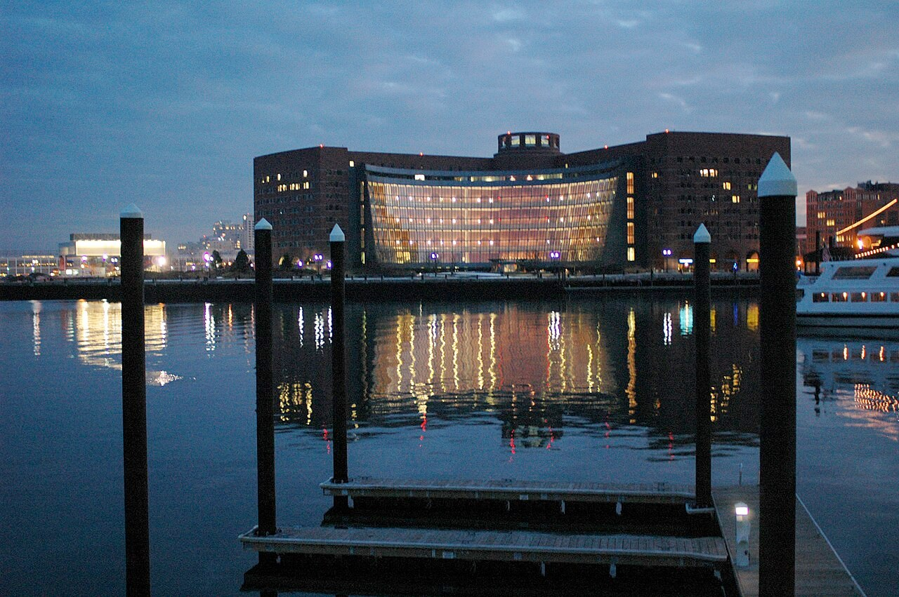
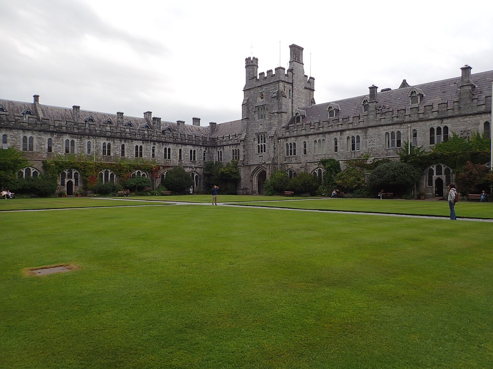
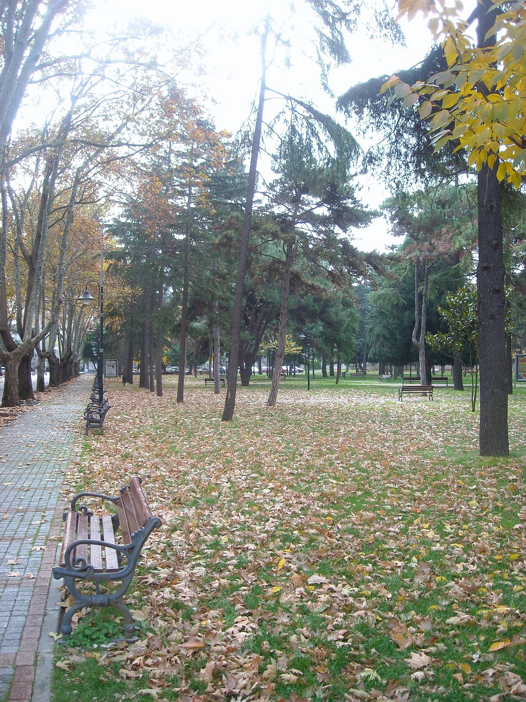
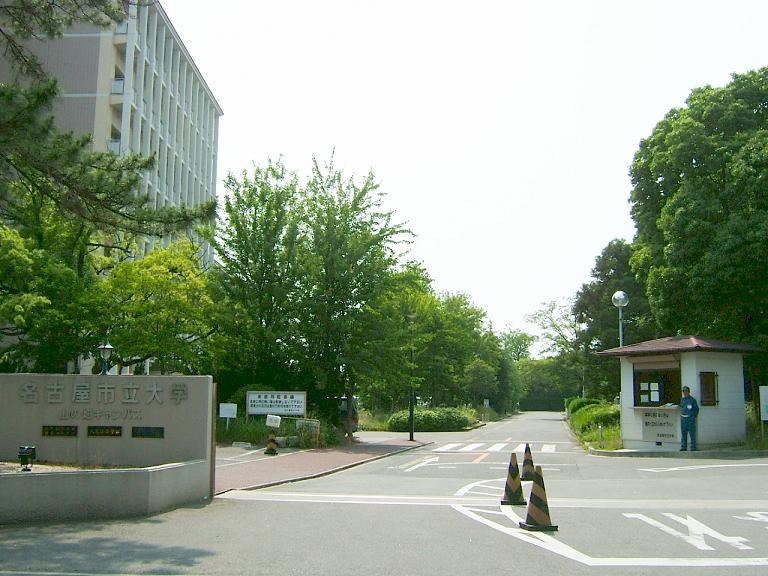
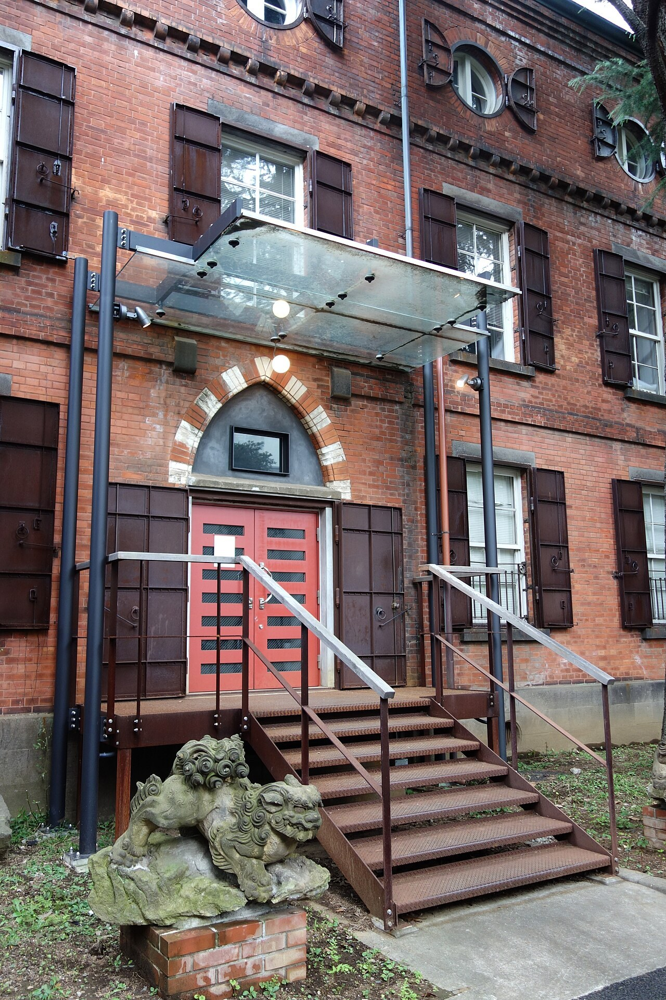
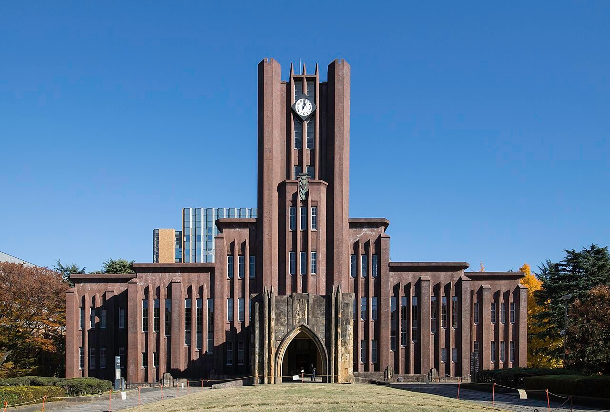
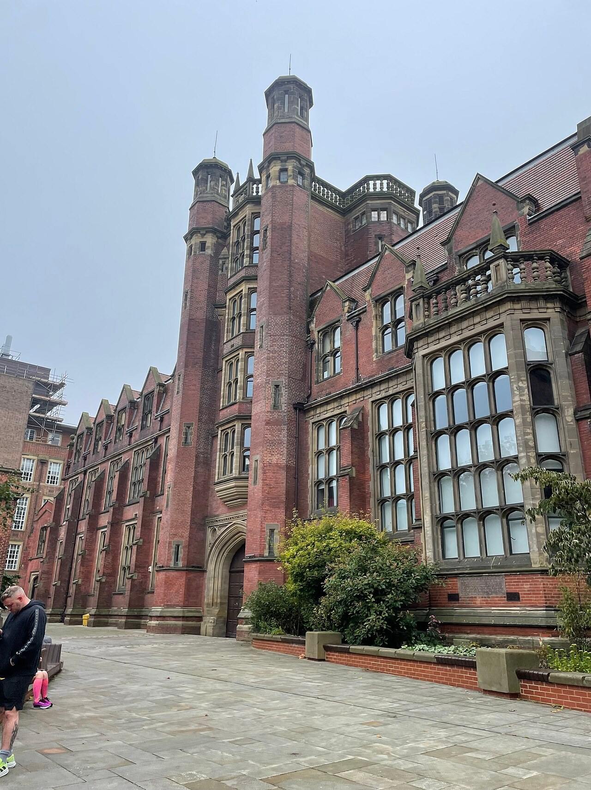
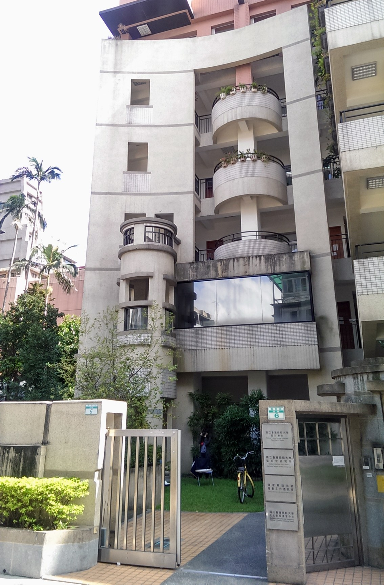

Actual place photographs provide context; they are not photographs of the reported events. Resized for the website. Social derivatives crop photographs and add headlines; applicable share-alike licences are retained.

Scott LaPierre — CC BY-SA 2.0 — Original source

Marathon — CC BY-SA 2.0 — Original source

Sadrettin — CC BY-SA 3.0 — Original source

Gnsin — CC BY-SA 3.0 — Original source

Daderot — CC0 — Original source

Kakidai — CC BY-SA 4.0 — Original source

Eirian Evans — CC BY-SA 2.0 — Original source

Fcuk1203 — CC BY-SA 3.0 — Original source